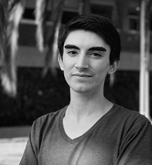

DESUC
La Dirección de Estudios Sociales UC está asociada al Instituto de Sociología de la Facultad de Ciencias Sociales de la Pontificia Universidad Católica de Chile.
Asesoría y soporte metodológico para el diseño, ejecución y análisis de estudios sociales.
La conforma un grupo de profesionales multidisciplinarios capaces de desarrollar proyectos de consultoría cualitativos y cuantitativos para organizaciones públicas y privadas. DESUC se constituye como un espacio capaz de interactuar y resolver inquietudes y problemas de políticas públicas, organizacionales y académicos.
Josefa Aguilar Analista de datos |
Soledad Araya Jefa de Proyectos |
Cristián Ayala Director |
Claudia Barraza Jefa de Gestión |
Vilma Flores Jefa de Terreno |
Marcelo Gonzalez Analista de datos |
Josefa Guerra Analista de datos |
Daniella Leal Jefa de Estudios Telefónicos |
Macarena Marchant Jefe de Calidad |
|  Jonatan Salazar Analista de datos |
Alejandra Villalobos Secretaria |
Claudia Yañez Jefa de Proyectos |
Puedes seguir a DESUC en: